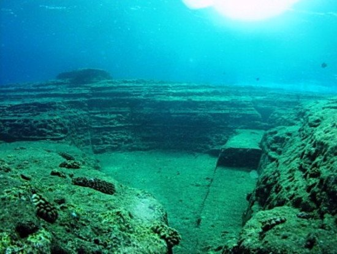

Необычные факты о самых интересных местах и короткие тесты, чтобы проверить себя. Узнай больше — путешествуй ярче. NomadGo вдохновляет открыть Кыргызстан своими глазами.
Выберите регион
⭐
1
🔒
2
🔒
3
🔒
4
🔒
5
1 уровень

Иссык-Куль
Ваши результаты
0%
🎉 Поздравляем! 🎉
Спасибо, что выбираете NomadGo для знакомства с Кыргызстаном!
Желаем ярких открытий, вдохновения и незабываемых путешествий. Будем рады вашему отзыву — именно ваше мнение помогает нам становиться лучше и делать NomadGo ещё интереснее.